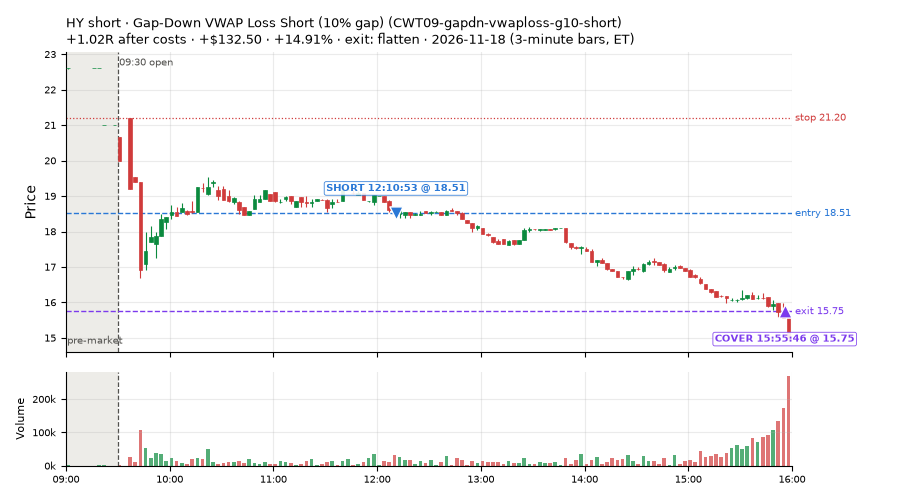
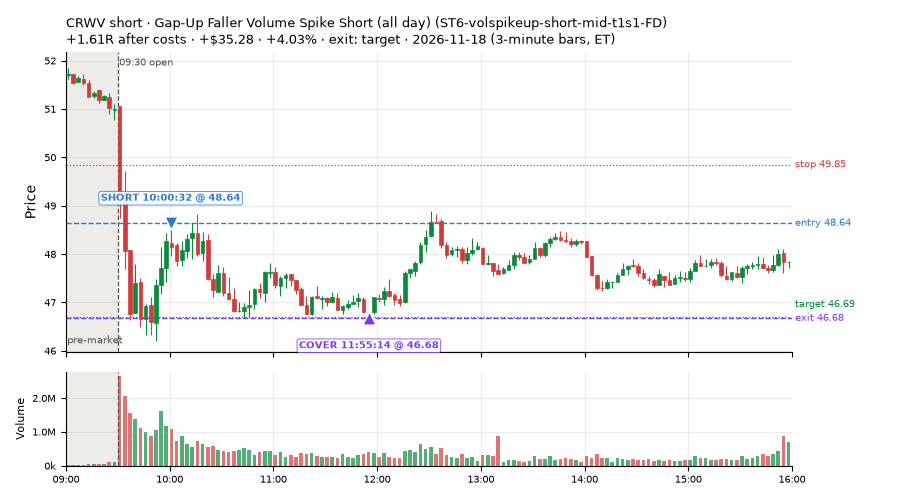
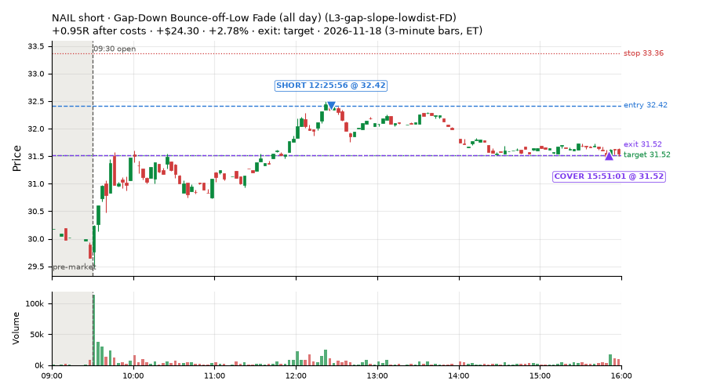
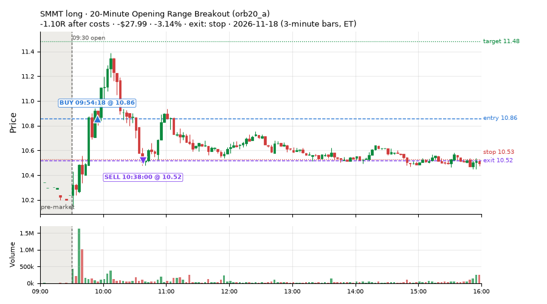
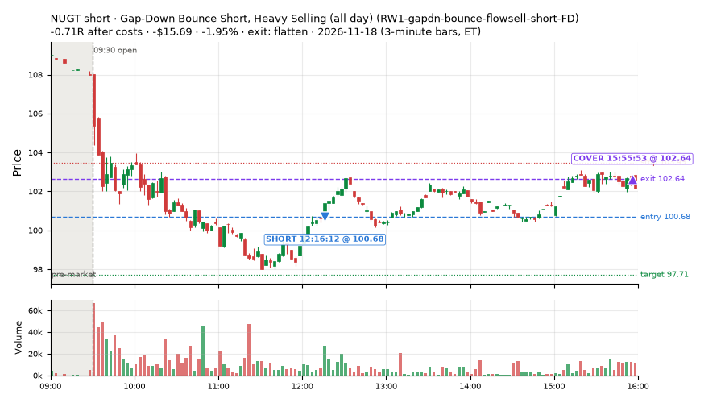
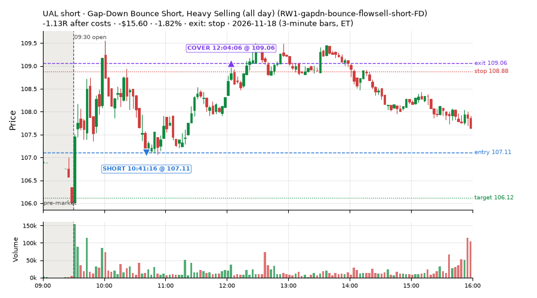
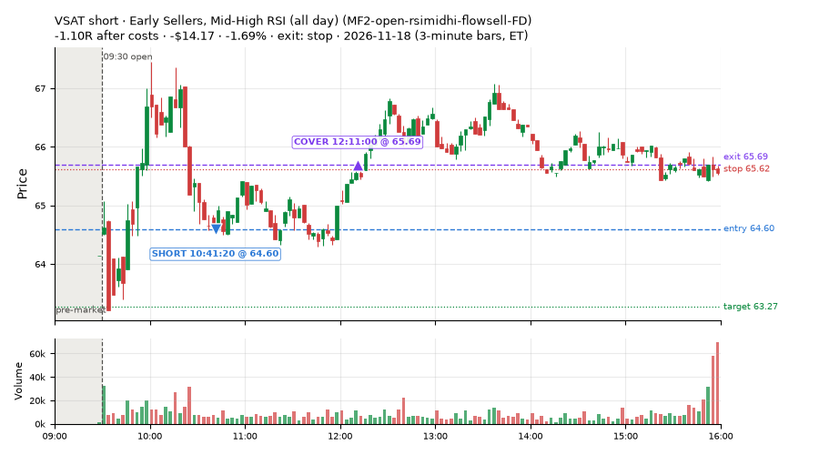
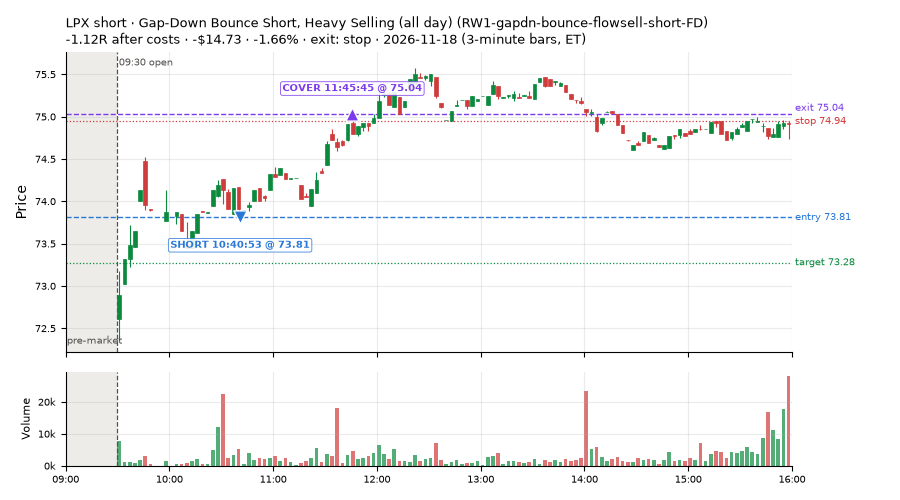

62 trades · win rate 52% · P/L $169.98
PROBATION: no live setup has passed both locked test periods. 10 owner-directed setups added 2026-10-08 (MarcoFlow top 5 + 5 new), untested live. RW6G1 (RW6 + VWAP band guard) added 2026-10-09, probation.

| Symbol | Setup | Side | In | Out | Entry | Exit | Exit reason | % gained | P/L |
|---|---|---|---|---|---|---|---|---|---|
| HY | Gap-Down VWAP Loss Short (10% gap) (CWT09-gapdn-vwaploss-g10-short) | short | 12:10 | 15:55 | 18.51 | 15.75 | flatten | +14.91% | $132.50 |
| CRWV | Gap-Up Faller Volume Spike Short (all day) (ST6-volspikeup-short-mid-t1s1-FD) | short | 10:00 | 11:55 | 48.64 | 46.68 | target | +4.03% | $35.28 |
| NAIL | Gap-Down Bounce-off-Low Fade (all day) (L3-gap-slope-lowdist-FD) | short | 12:25 | 15:51 | 32.42 | 31.52 | target | +2.78% | $24.30 |
| Symbol | Setup | Side | In | Out | Entry | Exit | Exit reason | % lost | P/L |
|---|---|---|---|---|---|---|---|---|---|
| SMMT | orb20_a | long | 09:54 | 10:38 | 10.86 | 10.52 | stop | -3.14% | $-27.99 |
| NUGT | RW1-gapdn-bounce-flowsell-short-FD | short | 12:16 | 15:55 | 100.68 | 102.64 | flatten | -1.95% | $-15.69 |
| UAL | RW1-gapdn-bounce-flowsell-short-FD | short | 10:41 | 12:04 | 107.11 | 109.06 | stop | -1.82% | $-15.60 |
| VSAT | MF2-open-rsimidhi-flowsell-FD | short | 10:41 | 12:11 | 64.60 | 65.69 | stop | -1.69% | $-14.17 |
| LPX | RW1-gapdn-bounce-flowsell-short-FD | short | 10:40 | 11:45 | 73.81 | 75.04 | stop | -1.66% | $-14.73 |








Signal to fill: median 1s, 90th percentile 3s (62 trades). Bars close each minute; the order follows the bar close.
Best excursion (MFE): median 0.46R; worst (MAE) median 0.73R. 26% of trades never got +0.25R in our favour; 1 reached +1R and still closed at or below 0.
| Symbol | Setup | Best R | Worst R | Closed R |
|---|---|---|---|---|
| SMMT | orb20_a | +1.60 | -1.15 | -1.10 |
| WEC | RW1-gapdn-bounce-flowsell-short-FD | +0.58 | -1.04 | -1.09 |
| WEC | MF3-open-flowsell-rsi5hi | +0.48 | -1.01 | -1.10 |
| LNT | RW1-gapdn-bounce-flowsell-short-FD | +0.44 | -1.02 | -1.11 |
| AWK | RW1-gapdn-bounce-flowsell-short-FD | +0.33 | -1.05 | -1.12 |
| Entry time | Trades | Win | Avg R | P/L |
|---|---|---|---|---|
| 09:50-10:30 | 11 | 73% | +0.09 | $46.05 |
| 10:30-11:30 | 18 | 28% | -0.49 | $-61.55 |
| 11:30-13:00 | 26 | 62% | +0.02 | $176.95 |
| 13:00-14:00 | 5 | 40% | +0.05 | $7.11 |
| 14:00-16:00 | 2 | 50% | -0.35 | $1.42 |
| Setup | Trades | Win | Avg R after costs | Adj R (net of SPY) | Avg R ex-market (all sessions) | P/L |
|---|---|---|---|---|---|---|
| Gap-Down VWAP Loss Short (10% gap) (CWT09-gapdn-vwaploss-g10-short) | 2.0 | 50% | +0.25 | +0.27 | +0.09 (beta +0.18, n 8) | $120.58 |
| Gap-Down Bounce-off-Low Fade (all day) (L3-gap-slope-lowdist-FD) | 1.0 | 100% | +0.95 | +0.82 | -0.01 (beta -1.23, n 109) | $24.30 |
| Gap-Down Rebound Overbought Short (all day) (L3-gap-slope-rsi5hi-FD) | 6.0 | 50% | +0.20 | +0.14 | +0.04 (beta -0.72, n 91) | $25.10 |
| Early Sellers, Mid-High RSI (all day) (MF2-open-rsimidhi-flowsell-FD) | 6.0 | 17% | -0.82 | -0.51 | -0.30 (beta -1.80, n 76) | $-32.09 |
| Early Sellers into a Pop (MF3-open-flowsell-rsi5hi) owner-directed; holdouts once: Sep-Oct -0.059R n170, Apr-Jun -0.034R n729 | 1.0 | 0% | -1.10 | -1.17 | -0.04 (beta -0.71, n 43) | $-5.11 |
| Early Sellers, Strong Heat (all day) (MF4-h40-open-flowsell-FD) | 12.0 | 67% | +0.12 | +0.02 | -0.13 (beta -1.46, n 95) | $28.17 |
| Afternoon Higher-Low Long (near-miss) (NM-HL-T75-pm-long) | 2.0 | 50% | -0.35 | -0.31 | +0.03 (beta +1.60, n 9) | $1.42 |
| Gap-Down Bounce Short, Heavy Selling (all day) (RW1-gapdn-bounce-flowsell-short-FD) | 24.0 | 42% | -0.33 | -0.35 | -0.20 (beta -1.00, n 139) | $-69.00 |
| Gap-Up Faller Volume Spike Short (all day) (ST6-volspikeup-short-mid-t1s1-FD) | 5.0 | 100% | +0.72 | +0.57 | +0.02 (beta -1.01, n 38) | $94.46 |
| 20-Minute Opening Range Breakout (orb20_a) failed Apr-Jun holdout: -0.040R/trade over 421 trades | 3.0 | 67% | -0.23 | -0.19 | +0.01 (beta +0.21, n 38) | $-17.85 |
Market direction (SPY, beta 1) accounted for $12.40 of today's $169.98; the rest ($157.58) came from the setups themselves. Avg R net of SPY: -0.14 (incl. a hedge leg's cost; report only).
13 setups live today. Today: 157 signals, 62 taken, 1 lost because another setup held the symbol (1%). Since 2026-10-09 (29 sessions): 10937 signals, 4346 taken, 769 lost to other setups (7%). Peak open positions today 35 of 400 slots. Earnings blackout removed 321 symbols before scanning.
Simulated playing time (not live): 6252 what-if trades of signals not taken, avg -0.13R, 48% winners; of them 616 lost to another setup (avg +0.02R).
Silent: IDX1-qqq100-0955-TQQQ-trail, IDX1-qqq100-0955-TQQQ-hold, IDX2-spy075-0945-3x-trail, IDX3-spy075-0955-3x-trail, IDX5-spy050-0945-3x-trail · Crowded out: RW4-ns3-adv150-short-FD, RW4-ns3-adv150-short, NS3-failed-vwap-reclaim-short-FD · Starved: MF3-open-flowsell-rsi5hi, orb20_a, MF1-945-flowsell-vwapup, RW6G1-ns2-up3-vwap2sd-short, LIQ-pdl-sweep-open15-vwap-long, MF5-flowsell-vwapup-rsi5hi, ST5-pdbrkup-short-mid-t05s1-FD, ST3-rsi5up-short-pm-t1s1-FD, exhaustion_short-FD, NS2-sma50break-overbought-short, MF1-945-flowsell-vwapup-FD
| Prio | Setup | Today sig / taken | Sessions | Signals / taken / trades | Taken/day | Expected/day | Lost to other setups | Lost to (setup n) | Top skip reasons | SIMULATED: not-taken n / avg R / win | Verdict |
|---|---|---|---|---|---|---|---|---|---|---|---|
| 1 | Gap-Up Faller Volume Spike Short (all day) ST6-volspikeup-short-mid-t1s1-FD | 6 / 5 | 23 | 69 / 38 / 38 | 1.65 | 1.24 | 4 | RW4-ns3-adv150-short-FD 3, NS3-failed-vwap-reclaim-short 3, NS3-failed-vwap-reclaim-short-FD 1 | split-tape short gate 13, spread / quote / size 8, not shortable / shorts off 6 | 29 / -0.08R / 48% | slow 8.3 entries/week; ~7 weeks to 60 trades |
| 2 | Gap-Down Bounce Rejection Short (10% gap) CWT09-gapdn-bounce-g10-lowerhalf-short | 3 / 0 | 5 | 100 / 4 / 4 | 0.80 | – | 0 | – | not shortable / shorts off 89, other 4, spread / quote / size 3 | 95 / -0.52R / 28% | slow 4.0 entries/week; ~15 weeks to 60 trades |
| 3 | Panic Flush Reversal (5x volume) CWT05-flush-m05-v5-long | 0 / 0 | 5 | 13 / 7 / 7 | 1.40 | – | 1 | CWT09-gapdn-vwaploss-g10-short 1 | spread / quote / size 3, other 2, symbol held by another setup 1 | 6 / +0.31R / 83% | slow 7.0 entries/week; ~9 weeks to 60 trades |
| 4 | Gap-Down VWAP Loss Short (10% gap) CWT09-gapdn-vwaploss-g10-short | 3 / 2 | 5 | 97 / 8 / 8 | 1.60 | – | 0 | – | not shortable / shorts off 86, spread / quote / size 3 | 88 / -0.78R / 23% | slow 8.0 entries/week; ~8 weeks to 60 trades |
| 5 | Early Sellers into a Pop MF3-open-flowsell-rsi5hi | 7 / 1 | 23 | 165 / 43 / 43 | 1.87 | 9.19 | 38 | MF3-open-flowsell-rsi5hi-FD 35, MF5-flowsell-vwapup-rsi5hi 13, MF5-flowsell-vwapup-rsi5hi-FD 7 | symbol held by another setup 38, split-tape short gate 38, spread / quote / size 24 | 122 / -0.34R / 38% | starved 1.87 entries/day vs ~9.19 expected |
| 6 | Afternoon Higher-Low Long (near-miss) NM-HL-T75-pm-long | 2 / 2 | 5 | 11 / 9 / 9 | 1.80 | – | 0 | – | spread / quote / size 2 | 2 / -0.01R / 50% | slow 9.0 entries/week; ~7 weeks to 60 trades |
| 7 | Big Gainer Dip-and-Pop NS1-rsidip-rsi5pop-long | 1 / 0 | 6 | 11 / 7 / 7 | 1.17 | 0.92 | 0 | – | spread / quote / size 2, price through stop/target 1, other 1 | 4 / +0.40R / 100% | slow 5.8 entries/week; ~10 weeks to 60 trades |
| 8 | Gap-Down Bounce-off-Low Fade (all day) L3-gap-slope-lowdist-FD | 10 / 1 | 28 | 482 / 109 / 109 | 3.89 | 9.76 | 9 | RW6-ns2-up3-short-FD 3, NS2-sma50break-overbought-short-FD 3, L3-gap-slope-rsi5hi-FD 3 | not shortable / shorts off 178, daily loss cap 72, split-tape short gate 50 | 364 / -0.00R / 54% | ok 19.5 entries/week |
| 9 | Gap-Down Rebound Overbought Short (all day) L3-gap-slope-rsi5hi-FD | 39 / 6 | 13 | 651 / 91 / 91 | 7.00 | 13.41 | 11 | L3-gap-slope-fromopen-FD 8, L3-gap-slope-lowdist-FD 4, RW6G1-ns2-up3-vwap2sd-short-FD 2 | not shortable / shorts off 315, daily loss cap 119, spread / quote / size 63 | 538 / -0.01R / 67% | ok 35.0 entries/week |
| 10 | 20-Minute Opening Range Breakout orb20_a | 4 / 3 | 28 | 109 / 38 / 38 | 1.36 | 6.79 | 0 | – | trigger missed between polls 32, spread / quote / size 15, other 10 | 65 / +0.03R / 51% | starved 1.36 entries/day vs ~6.79 expected |
| 11 | Early Sellers, Mid-High RSI (all day) MF2-open-rsimidhi-flowsell-FD | 17 / 6 | 13 | 190 / 76 / 76 | 5.85 | 10.09 | 12 | RW1-gapdn-bounce-flowsell-short-FD 5, RW7-gapdn-bounce-early-short-FD 4, MF2-open-rsimidhi-flowsell-FD 3 | spread / quote / size 43, other 29, not shortable / shorts off 22 | 113 / -0.21R / 32% | ok 29.2 entries/week |
| 12 | Gap-Down Bounce Short, Heavy Selling (all day) RW1-gapdn-bounce-flowsell-short-FD | 46 / 24 | 12 | 225 / 139 / 139 | 11.58 | 17.10 | 10 | RW3-gapdn-rsi5pop-flowsell-short-FD 5, MF2-open-rsimidhi-flowsell-FD 3, RW5-heat30-flowsell-rsi5pop-gapdn-short-FD 3 | spread / quote / size 33, other 28, not shortable / shorts off 14 | 84 / +0.15R / 60% | ok 57.9 entries/week |
| 13 | Early Sellers, Strong Heat (all day) MF4-h40-open-flowsell-FD | 19 / 12 | 13 | 240 / 95 / 95 | 7.31 | 16.45 | 26 | MF5-flowsell-vwapup-rsi5hi-FD 9, MF1-945-flowsell-vwapup-FD 6, RW3-gapdn-rsi5pop-flowsell-short-FD 6 | spread / quote / size 52, not shortable / shorts off 37, symbol held by another setup 26 | 142 / -0.27R / 43% | ok 36.5 entries/week |
Every trade is attached as a CSV you can open and edit in Excel or Google Sheets. Live page: https://misiti15.github.io/MCF/live/